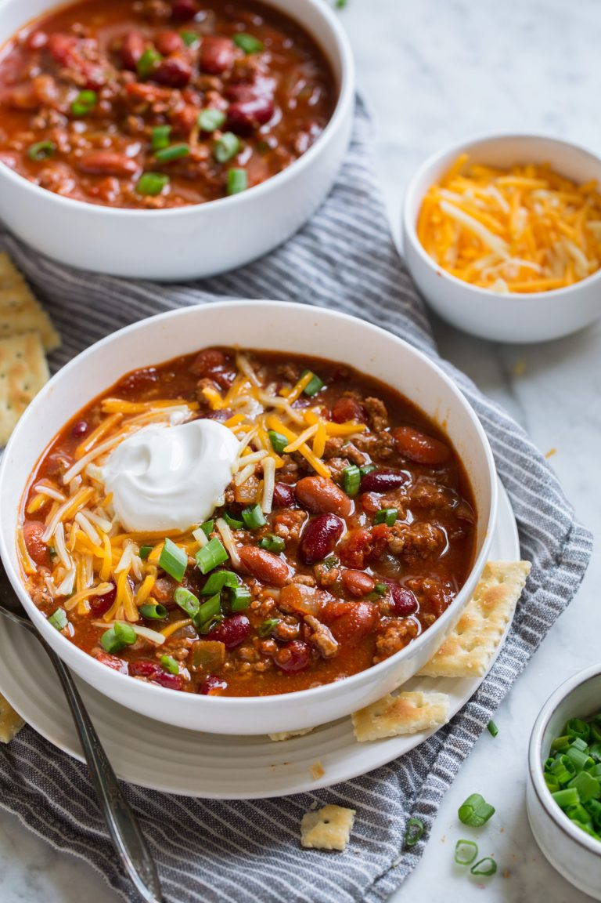
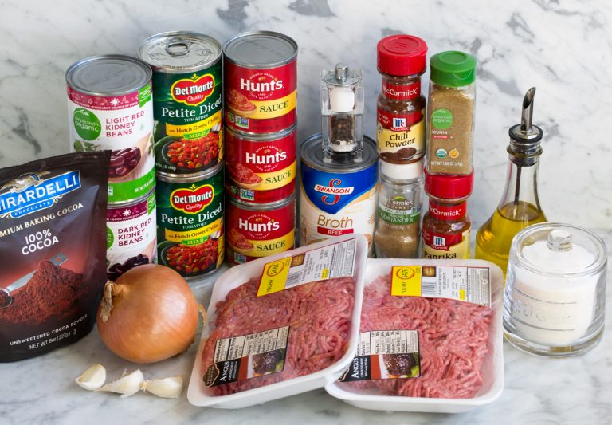

Slow Cooker Chili

Description
Nothing beats the cold like a hot bowl of chili. Chili is a comfort food where I'm from. It is really easy to make thanks to the help of a slow cooker! All you need to do is add the ingredients in one pot and a little bit of time. The longer you wait the better the chili becomes. You'll be having the best chili in your life after a long days work!
Ingredients
- Olive Oil: Use for sauteeing. Vegetable oil will work too fi that's what you have on hand.
- Ground beef: I recommend 85% lean. It has a good ratio of fat for browning but not too much.
- Yellow onion and garlic: aromatics that add lots of flavor. Use fresh garlic for best results.
- Canned tomatoes with green chilies: if you can't find the size listed then you can use 2 (14.5 oz) cans of tomatoes then add a 1 (4 oz) can of diced green chilies.
- Beef broth: this thins it out, if you don't want it to get soupy at all then you can omit it. If you want it more soup add a little more.
- Spices: chili powder, cumin, paprika, sugar, coriander, S&P.
- Cocoa powder: this secret ingredient adds depth. Don't worry it's not going to taste like chocolate.
- Dark and light kidney beans: if you don't have both shades just use two dark.

Directions
- Saute aromatics, add to slow cooker: Heat olive oil in a large and deep non-stick skillet over medium-high heat.
Add onion and saute 3 minutes, then add garlic and saute 30 seconds longer. Pour onions into a 6 or 7 quart slow cooker
- Brown beef: Return skillet to medium-high eat, add beef and cook stirring occasionally until beef has browned.
- Drain fat, add beef to slow cooker: Drain most of fat from beef, leaving about 2 Tbsp in with beef (this is optional, I think it ads flavor but you can drain it all if you prefer). Pour browned beef into slow cooker.
- Add liquids and seasonings: Stir in diced tomatoes, tomato sauce, beef broth, chili powder, cumin, paprika, cocoa powder, sugar, coriander and season mixture with salt and pepper to taste.
- Cook low and slow: Cover with lid and cook on low heat for 5 to 6 hours.
- Stir in beans: Add in dark and light red kidney beans and allow to heat through, about 2 minutes.
- Serve warm with desired toppings.
Go Back Home